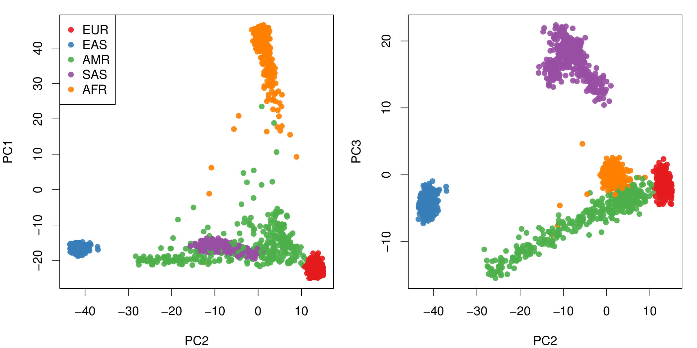

About
Ancestry and Kinship Tools (AKT) provides a number of useful statistical genetics routines using the htslib API for input/output. This means it can seamlessly read BCF/VCF files and play nicely with bcftools.
AKT includes fast implementations of:
- Principal Component Analysis (using Randomised SVDs)
- kinship coefficient calculation
- detection of cryptic pedigrees
- profiling of Mendelian inheritance/inconsistencies
- IBD segment detection
- cluster analysis (useful in conjunction with PCA)
- calculation of various LD metrics
AKT is freely available under GPL3 license. This software is not commercially supported.
Quick start:
git clone https://github.com/Illumina/akt.git
cd akt/
make
./akt pca -R ./data/wgs.grch37.vcf.gz ALL.wgs.phase3_shapeit2_mvncall_integrated_v5.20130502.genotypes.omni25.bcf > pca.txt